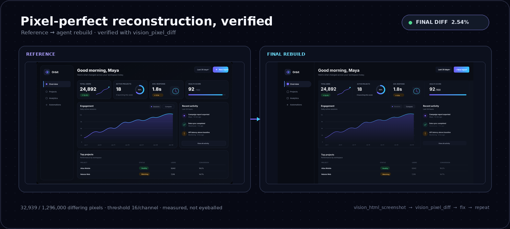
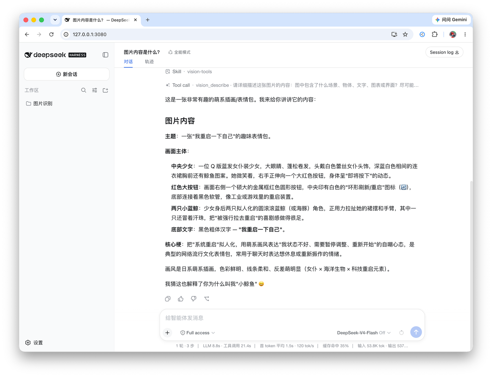

Vision Router
让文字 Agent 也能处理图像
把视觉能力做成可调用、可回溯的工具，而不是让模型单凭一句描述就宣布任务完成。
- 视觉工具
- 14
- GitHub 版本
- v3.0.5
- 主要实现语言
- TS

为什么做
DeepSeek Harness 中的文字模型擅长推理和调用工具，但不能自然读取截图或定位界面元素。把整张截图交给另一个视觉模型，也很难验证返回的坐标和内容是否正确。
怎么实现
- 按需开启视觉
用户在会话里主动切换 Vision；对话模型仍负责决策，视觉后端提供观察结果。
- 拆成专用工具
把图像问答、OCR、裁剪、坐标定位、截屏和像素比对变成可独立调用的工具。
- 尽量留下证据
使用截图重建与 pixel diff 循环对照结果；对失败的后端按错误类别切换。
能看到的结果

真实界面：文字 Agent 调用视觉工具后给出图像说明。
仓库中的一个 UI 重建示例经过 vision_pixel_diff 检查，记录的最终差异为 2.54%（阈值为每通道 16）。这是特定示例的实测值，不代表所有任务的准确率。
查看像素比对原图边界与限制
默认并非完全离线
项目默认带有可用的免密钥云端视觉后备链。使用云端后端时，图片（或裁剪结果）、问题与相关元数据会发送到服务商。处理敏感材料必须先检查数据流，按仓库文档明确配置本地方案。
不同视觉后端的接入能力、服务限制和延迟并不相同；工具可以降低不确定性，不等于保证识别正确。